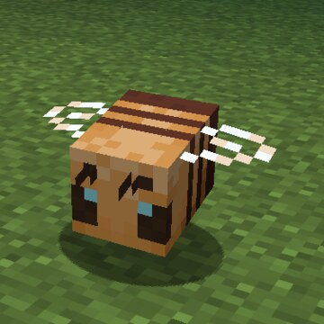

Hives
Hives
Catching bees
Hold an empty skep to a wild bee nest and use it: the bees come with it, of whatever kind lives there.
A skep of bees can be carried and set down anywhere.
The skep
Straw, simple and old. When it's full, take honey with a bottle or comb with shears, like any hive.
A skep has no frames: for named honeys you need a frame hive.
The frame hive
Put empty frames in (up to eight). As the hive fills, the bees draw them out and cap them with honey.
Frames
A sheet of paper in a frame of sticks. The bees build comb on it, fill it, and cap it with wax.
No frames, no honey of its own: keep a few spare in.
Moving in
Use a skep of bees on a frame hive to tip the colony in. The bees take the skep's kind with them.
A look inside
Open a hive with an empty hand to look in: its bees, its frames, and what they're working.
Lift capped frames out on its screen; smoke them first.
Smoke
Smoke calms bees. Work with a campfire under the hive, a smoker in either hand, or Beekeeper's Calm.
Without it, a colony may boil out and sting.
Swarms
In spring a crowded colony sends half its bees off with the old queen. They hang in a buzzing cluster under a branch nearby.
Hold an empty skep to it to catch it. Left alone, in a couple of days it moves into an empty hive nearby, or flies away.
Carniolans swarm readily; Buckfasts hardly ever.
Breeding Buckfasts
Keep Italian and Carniolan colonies within twenty-four blocks of each other. A swarm from either may come out Buckfast.

Catch it and you have the gentlest, hardest-working bees of all.
The beekeeper's year
Spring: colonies build up; fruit blossom and berry flowers.
Summer: the main flow. Frames fill fast.
Autumn: the flow slows; honeydew in the pines.
Winter: clustered and still. Leave Italians something to eat.